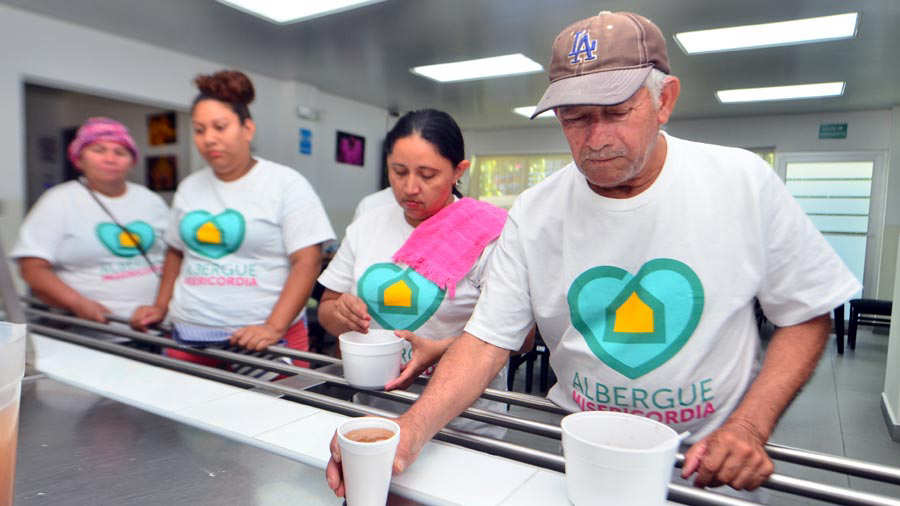
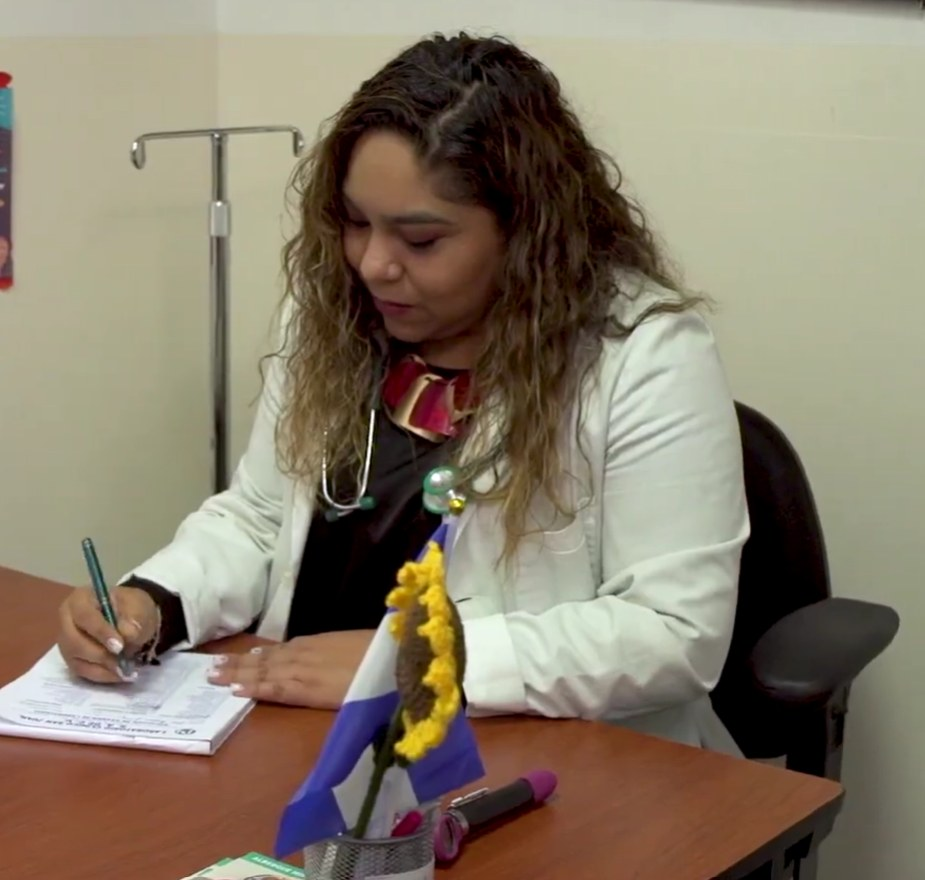
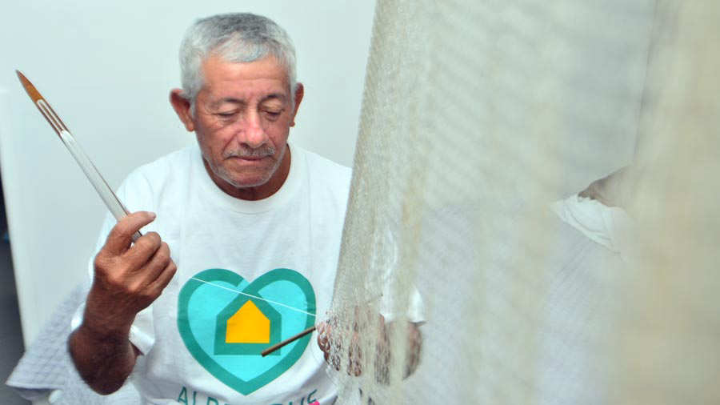

Tres tiempos de comida
Desayuno, almuerzo y cena, más refrigerios, con una alimentación adecuada para cada paciente.
Si viajas a San Salvador para recibir tu tratamiento oncológico, no estás solo. Albergue Misericordia te ofrece un hogar sin barreras, cálido y digno mientras te recuperas.

Un refugio para quienes luchan contra el cáncer
El Albergue Misericordia nació de una idea sencilla y profundamente humana: nadie debería dormir en la calle mientras lucha contra el cáncer. Muchos pacientes vienen del oriente y del occidente del país para recibir tratamiento en San Salvador y no tienen dónde quedarse ni cómo pagar un hospedaje.
Aquí encuentran un hogar cálido: una cama cómoda, alimentación, atención de enfermería, acompañamiento psicológico y espiritual, y transporte a sus citas. Todo a cambio de una cuota simbólica y voluntaria, definida según un estudio socioeconómico.
Fue fundado en noviembre de 2018 por dos organizaciones hermanas —el Comité de Proyección Social y la Fundación Nuevos Tiempos.
📍 Ubicación: Alameda Juan Pablo II y 23 Avenida Norte, San Salvador, El Salvador — cerca de los principales centros de tratamiento.
Cada residente recibe mucho más que un techo. Estos son los servicios que hacen del albergue un verdadero hogar.
Desayuno, almuerzo y cena, más refrigerios, con una alimentación adecuada para cada paciente.
Habitaciones cómodas y limpias para descansar y recuperar fuerzas durante el tratamiento.
Personal de enfermería pendiente de los residentes las 24 horas, todos los días.
Traslado a las citas y tratamientos en los centros de salud de San Salvador.
Instalaciones seguras y vigiladas para la tranquilidad de residentes y familias.
Acompañamiento espiritual y terapia ocupacional para sostener el ánimo y la esperanza.
Atención psicológica para acompañar tanto al paciente como a sus familiares.
Espacios acogedores para descansar, convivir y compartir momentos en comunidad.
Elige la opción con la que te identificas y te llevamos directo a la información que necesitas.
¿Eres paciente con cáncer y necesitas un lugar donde alojarte durante tu tratamiento? Conoce los requisitos y cómo aplicar.
Quiero alojarmeTu donación sostiene el hogar. Descubre cómo donar y en qué se usa exactamente cada aporte.
Quiero donarRegala tu tiempo y talento. Te contamos en qué puedes ayudar y los requisitos para sumarte.
Quiero ayudarPersonal y trabajadores del albergue: ingresa al panel interno con calendario y archivos privados.
Acceso privado
La cuota es simbólica y voluntaria. Si la persona no puede colaborar económicamente, se estudia el caso y puede ser exonerada del pago.
Cada residente representa un costo aproximado de $28.00 al día, mientras que el paciente aporta una cuota voluntaria de apenas $3.00. La diferencia se sostiene gracias a personas y empresas solidarias como tú.
Puedes donar de forma fácil y segura en línea, a través de la plataforma de nuestra organización, el Comité de Proyección Social.
También puedes donar artículos que el albergue necesita en su día a día:
Para donaciones de empresas o alianzas, escríbenos por WhatsApp o al correo medico.albergue@cpses.org.
Tu aporte se invierte directamente en el cuidado diario de las personas que acogemos:
Recuerda que cada paciente representa un costo aproximado de $28.00 al día y solo aporta una cuota voluntaria de $3.00. Tu donación cubre esa diferencia.
Las voces de quienes han encontrado aquí un hogar lo dicen mejor que nosotros.
“Aquí atienden bien a las personas de escasos recursos. Lo bueno que he encontrado es que hay amor, nos dan ánimos para seguir viviendo. Nos dan la comida, medicina si me siento mal, me toman la presión. Me siento más que bien y agradecido.”

“Al ver a tantos pacientes sin un lugar donde quedarse nace la inquietud. Se unieron dos organizaciones hermanas y se hizo realidad este albergue. Aquí se les abren las puertas ante sus necesidades.”
[COMPLETAR: testimonio de un voluntario o familiar, con su nombre y foto si la hay]
Escríbenos o llámanos. Con gusto resolvemos tus dudas.